HN: すいま
所属班: プログラム班
回生: 4回生
Twitter: @SuimezZZ
メリークリスマス！！
こんにちは。4回生のすいまです。
まず今回このようなイベントを開いてくれたSBさんに感謝！！ありがとうサンキュー！！
今年も誰向けなのかわからない記事を書かせていただきますよええ。
去年のアドベントカレンダーでも UniTask について書かせていただきました。
あれから1年。 UniTask も進化し 『UniTask v2』 となりパワーアップしました！！
旧UniTask からの変更点や追加機能などを解説いたします！ぜひ UniTask を開発に取り入れてみてください！
※この記事では UniTask2 を UniTask , 従来のUniTask を 旧UniTask と表記します。
去年の記事と被る内容は量が多過ぎちゃうんで省きます。
例えば、前回と変更の無いメソッド、キャンセルの話、Awaiterの話、UniTaskTacker などなどのことは触れません。
UniTask や async/await を使ったことない人は去年の記事を見てからの方がより理解が深まって良いと思います！
この記事は Unity で開発している全ユーザー向けです。
要するに UniTask は Unity で開発する際に必須のライブラリと私は言いたいわけですはい。
難しいところがあっても、わかる部分だけつまみながらでも使えるので誰でも使えます。
マジで。みんな使って。
-----変更点-----
-----追加機能-----
『非同期処理』→ 同期じゃない処理
そもそも同期処理とは何でしょう？
例えばこんなやつです
int a = 1;
int b = 2;
int sum = SumHoge(a,b); // 引数の数字を合計した値が返ってくる
Debug.Log(sum);
int SumHoge(int a, int b){
return a + b;
}つまりいつも書いてるのが同期処理です。
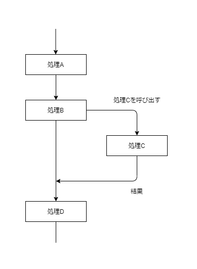
非同期処理とは
例えばこんなやつです
void Start(){
Debug.Log("はじまり～");
StartCoroutine(TimerDebug("こるーちん！",3)); //3秒後に出力
Debug.Log("おわり～");
}
IEnumerator TimerDebug(object obj,float time){
yield return new WaitForSeconds(time);
Debug.Log(obj);
}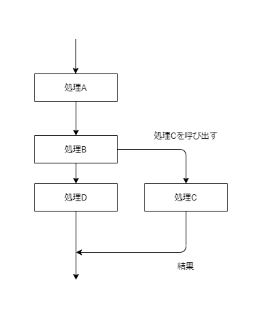
コルーチンは Unity 初心者でも触れやすい代表的な非同期処理です。指定秒数後にログを吐くという意味の分からないものですがまあ良いでしょう。結果は画像のようになります。
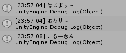
「はじまり～」
↓
「おわり～」
↓
３秒経つ
↓
「こるーちん！」
って感じですね。
Startメソッド内では「はじまり～」→「こるーちん！」→「おわり！」となっていますが、TimerDebugメソッド内でyield return new WaitForSeconds(time);があるため、ブロッキングが発生します(この一行の処理が終わるのに3秒かかるということ)。止まってる間にもStartメソッド内では通常進行でプログラムが実行されます。
こんな感じで関数の結果を待たずに次の行の処理が行われているのです。要するに、通常通り逐次実行されるものと、コルーチンを実行するもの、二手に分かれています。
これが非同期処理です。
読んで字のごとく、非同期を待つ。です。async と await を使って非同期処理を待つための機能です。 さっきはコルーチンの結果を待たずに二手に分岐して処理を行いました。 async/await では、非同期メソッドがその結果を得るまで待つことができます。
C#では Task と async/await がセットで使われることが多いのでこんな例を出してみます。
async Task HogeAsync(){ //メソッド宣言時にasync修飾子をつける
Debug.Log("まつ！");
await Task.Delay(1000); //1000ミリ秒待つ
Debug.Log("1秒経った！");
}
await HogeAsync(); //使うときはawaitをつけるasync 修飾子を付けると非同期メソッドになる。 await を付けると非同期処理の結果を受け取るまで待つことができるawait は非同期メソッド内で使うことができる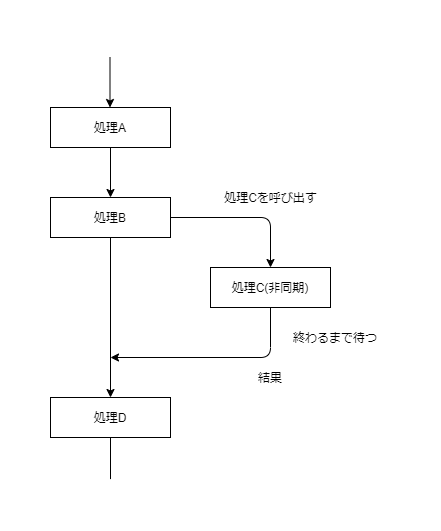
このように、非同期処理を同期処理のように書くことができるのです。
『UniTask v2 – Unityのためのゼロアロケーションasync/awaitと非同期LINQ』 (公式より引用)
旧UniTask のときからコードを全て書き換えたそうです。
キャッチフレーズもだいぶ変わってますね
AssetStore には無いので、Github か PackageManager から導入します。
UniTaskとは、簡単にいうと Unity で async/await をより使いやすくしてくれるライブラリです。C# の ValueTask/IValueTaskSource の挙動を準拠して作られています。
さきほど Task で書いたメソッドですが
private async UniTask HogeAsync(){ // TaskをUniTaskに書き換えるだけ
Debug.Log("まつ！");
await UniTask.Delay(1000); // 1000ミリ秒待つ
Debug.Log("1秒経った！");
}
await HogeAsync(); //使うときはawaitをつけるこのように、 Task 部分を UniTask に書き換えるだけで使うことができます。
また、.NET Core では Task だけでなく ValueTask も暗黙的な型変換に対応しています。
public ValueTask DoAsync(){
return UniTask.Create(async () => {
await Task.Delay(100);
await UniTask.Delay(100);
});
}UniTask は Unity 用に作られているため、Unity の機能や API が拡張されていて使いやすいものになっています。
例えば
// 10フレーム待つ
await UniTask.DelayFrame(10);
// コルーチンではこんな感じ？
for(var i = 0; i < 10; i++){
yield return null;
}このようにフレーム単位の await をしたり、Unity ならではの機能も多いです。 ちなみに、コルーチンで表現できる非同期処理を UniTask で全て再現できます。なので最初はコルーチンを使う感覚で使ってみると扱いやすいと思います。
// ジェネリックで返り値を指定できる
async UniTask<int> SumAsync(int num1,int num2){
return await UniTask.Run(() => num1 + num2);
}このようにジェネリックを使ってメソッドに返り値を指定することもできます。これはコルーチンではできません。
ここからは 旧UniTask からの変更点を紹介していきます。
旧UniTask から UniTask2 へ移行する場合は 破壊的変更 が多く存在するので注意が必要です。
Unity2018.3 → Unity2018.4.13
Unity2018.4.13未満を使っている場合はアップデートできません
旧UniTask は以前 UniRx というライブラリの一部で、その名残で UniRx.Async という名前空間を使っていました。
今は Cysharp.Threading.Tasks に変わりUniRxの名残は消えました。
同じ UniTask,UniTask<T> の 2回以上の await が制限されました。
async UniTaskVoid Start(){
var hogeTask = HogeAsync(1000);
await hogetask;
// 2回目以上の await は InvalidOperationException がスローされる
await hogetask;
}
async UniTask HogeAsync(int milliseconds){
await UniTask.Delay(milliseconds);
Debug.Log(milliseconds + "㍉秒経った！");
}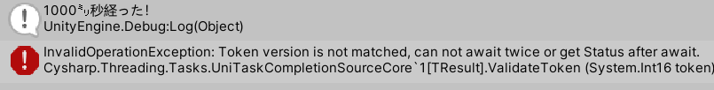
同じインスタンスを2回以上 await すると InvalidOperationException という例外がスローされます。
(そもそもこの場合は2回目の await は、すでに完了した UniTask なのでエラーが起きなければ素通りします。)
2回以上 await したい場合は 同じUniTaskを2回以上awaitする で解説します。
同じ UniTask を2回以上 await をしたいときは以下の方法を使います。
UniTask,UniTask<T> のインスタンスには Preserve() というメソッドが生えてます。Preserve() を通した UniTask は2回以上 await できるようになります。
async UniTaskVoid Start(){
var hogeTask = HogeAsync(1000);
var reusableTask = hogeTask.Preserve();
await reusableTask;
await reusableTask; // 例外がスローされない(この場合は完了したUniTaskをawaitしてるので素通りする)
}
async UniTask HogeAsync(int milliseconds){
await UniTask.Delay(milliseconds);
Debug.Log(milliseconds + "㍉秒経った！");
}UniTaskCompletionSource から生成する UniTask は2回以上 await することができます。
そもそも2度以上 await するときとはいつでしょうか？
同じ UniTask を、多方面から同時に取得する とか 完了していればスルーすることを想定するとき とかがそうでしょう。
例として
ゲームが始まる前にカウントダウンをして、0になったら完了する UniTask を public で公開する
という機能を作ろうと思います。 こんな感じです。
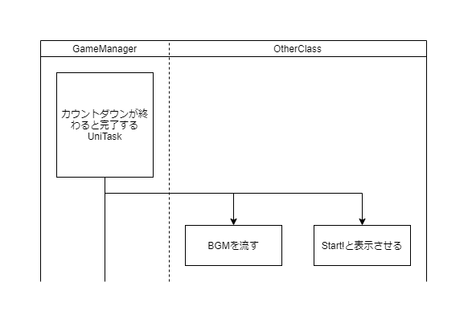
public class GameManager : MonoBehaviour {
private int seconds = 3;
private UniTaskCompletionSource utcs = new UniTaskCompletionSource();
public UniTask CountdownAsync => utcs.Task;
private async UniTaskVoid Start(){
while(seconds > 0){
Debug.Log(seconds);
await UniTask.Delay(1000);
seconds--;
}
utcs.TrySetResult(); //Taskを完了する
}
}utcs.Task により UniTaskCompletionSource から UniTask を取得することができます。
このように2度以上 await 可能な UniTask を UniTaskCompletionSource 経由で公開することができます。
public class Sample1 : MonoBehaviour {
[SerializeField]private GameManager gameManager;
private async UniTaskVoid Start(){
await gameManager.CountdownAsync;
Debug.Log("BGM~~~~♪♪♪♪");
}
}public class Sample2 : MonoBehaviour {
[SerializeField]private GameManager gameManager;
private async UniTaskVoid Start(){
await gameManager.CountdownAsync;
Debug.Log("Start!!");
}
}あとはこのように await gameManager.CountdownAsync; で待てば OK です。
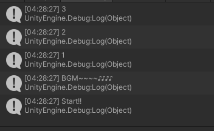
ゲームオブジェクトなどの初期化時、それを非同期にしたい場合があります。
UniTask.Lazyはその方法のうちの一つです。
旧UniTask の public UniTask(Func<UniTask<T>> factory) に相当するものです。ちなみにこのコンストラクタは廃止されています。
UniTask.Lazyの返り値は AsyncLazy型 で、こいつは awaitable なので直接 await できますし、2回以上の await が可能です。UniTaskに変換する場合は .Task を使います。
public UniTask PlayerInitAsync => textureLoadLazy.Task; // UniTaskとして公開
private AsyncLazy<Texture> textureLoadLazy;
private void Awake(){
textureLoadLazy = UniTask.Lazy(async () =>
await Resources.LoadAsync<Texture>("player") as Texture // テクスチャを非同期で読み込む
);
}生成した UniTask は即時実行されるようになりました。
これは ValueTask/IValueTaskSource の挙動に沿っているためです。
// 旧UniTaskの挙動
var task = UniTask.Delay(1000); // 1秒待つUniTaskを生成
Debug.Log("a"); //
await UniTask.Delay(2000); // 2待つ
Debug.Log("b"); //
await task; // 1秒待つ(遅延実行)
Debug.Log("c"); //これが 旧UniTask での 挙動でした。
// UniTaskの新しい挙動
var task = UniTask.Delay(1000); // 1秒待つUniTaskを生成(即時実行)
Debug.Log("a"); //
await UniTask.Delay(2000); // 2秒待つ
Debug.Log("b"); //
await task; // 既に完了しているUniTaskなので素通り
Debug.Log("c"); // bのあとすぐにcも表示される結構な違いがあると思います。旧UniTask に慣れている人は注意しましょう。
遅延実行される UniTask を生成するには専用のメソッドを使う必要があります。
デリゲートから遅延実行できる2つの方法を紹介します。
主に初期化を非同期にするのに用いられます。
さっき登場した UniTask.Lazy は 遅延実行できる UniTask を生成できます。
public UniTask PlayerInitAsync => textureLoadLazy.Task; // UniTaskとして公開
private AsyncLazy<Texture> textureLoadLazy;
private void Awake(){
textureLoadLazy = UniTask.Lazy(async () =>
await Resources.LoadAsync<Texture>("player") as Texture // テクスチャを非同期で読み込む
);
}
private async UniTaskVoid Start(){
await textureLoadLazy; // awaitして初めて起動する
}
さっきの例と同じです。
返り値が AsyncLazy型 なので 2回以上の await が可能です。
UniTask.Lazy と違い、返り値が UniTask,UniTask<T> なので1回しか await できません。
var task = UniTask.Defer(() => UniTask.Delay(1000));// 1秒待つUniTaskを生成(Deferで生成したので即時実行しない)
Debug.Log("a"); //
await UniTask.Delay(2000); // 2秒待つ
Debug.Log("b"); //
await task; // 1秒待つ(遅延実行)
Debug.Log("c"); // Defer ⇒ await は 1回のみ。Lazy より軽い。 Lazy ⇒ 複数 await 可能。
Lazy は複数回 await できるので Defer より若干重いです。
複数回 await するなら Lazy, 1回だけなら Defer を使いましょう。
// 旧UniTask
await SceneManager.LoadSceneAsync("HogeScene") //Progressから進行状況が取れる
.ConfigureAwait(Progress.Create<float>(n => {
Debug.Log($"現在{n * 100}%");
}));旧UniTask では Resources.LoadAsync や SceneManager.LoadSceneAsync などの AsyncOperation は ConfigureAwait と Progress を使って進行状況を見ることができました。
ですが、ConfigureAwait は廃止され、 .ToUniTask のオーバーロードとして拡張メソッドを使うことで同じ挙動をするようになりました。
await SceneManager.LoadSceneAsync("HogeScene")
.ToUniTask(Progress.Create<float>(n => { // ToUniTaskに変えるだけ
Debug.Log($"現在{n * 100}%");
}));指定した全てのUniTaskが完了するまで待機できます。
並列処理ができるのでとても便利！
UniTaskの型引数が異なる型でもOKです。
var task1 = UniTask.DelayFrame(10); // UniTask型
var task2 = UniTask.Run(() => "完了！"); // UniTask<string>型
var task3 = UniTask.Run(() => 100f); // UniTask<float>型
await UniTask.WhenAll(task1, task2, task3); // 全てのUniTaskが完了するまで待つUniTask, UniTask<T> のタプルに対する await で自動的に WhenAll 扱いになる仕様になりました。
// UniTask.WhenAll と同じ
await (
UniTask.Run(() => "完了！"),
UniTask.Run(() => 100f)
);
// コンパイルエラー
await (
UniTask.DelayFrame(10), // UniTask型
UniTask.Run(() => "完了！") // UniTask<string>型
);仕様上、全て UniTask<T> か、全て UniTask でないとコンパイルエラーになります。単にC#の問題で、暗黙的な型変換ができていないので明示的な型変換を加えます。
// 非ジェネリック
await (
UniTask.DelayFrame(10),
(UniTask)UniTask.Run(() => "完了！")
);
// ジェネリック
await (
UniTask.DelayFrame(10).AsAsyncUnitUniTask(), // UniTask<AsyncUnit>型
UniTask.Run(() => "完了！") // UniTask<string>型
);ちなみに、この場合は結果をタプルで受け取ることができます。
// 非ジェネリック
ver result = await (
UniTask.DelayFrame(10),
(UniTask)UniTask.Run(() => "完了！")
);
Debug.Log(result.Item1);
Debug.Log(result.Item2);
// ジェネリック
var task1 = UniTask.DelayFrame(10).AsAsyncUnitUniTask(); // UniTask<AsyncUnit>型
var task2 = UniTask.Run(() => "完了！"); // UniTask<string>型
// WhenAllを明示的に書いても同じ
var (r1,r2) = await UniTask.WhenAll(task1, task2);
Debug.Log(r1);
Debug.Log(r2);変更点はありませんが、将来的に非推奨となる予定です。
UniTask はほぼ全ての機能を単一のスレッドで実行しますが、UniTask.Run などスレッドプール上で実行されるものもあります。
WebGLビルドは単一スレッドしかサポートされておらず、UniTask.Run を使うことができません。UniTask.Create や UniTask.Void を検討しましょう。
その他メソッドのシグネチャがいろいろ変わってます。ちょいちょい注意しましょう
旧UniTask よりも await できるものが増えたので紹介します。
CancellationToken に .WaitUntilCanceledという拡張メソッドが追加されています。CancellationToken が キャンセル状態になると完了する awaitable です。
// GameObjectがDestroyされるとキャンセル状態になるCancellationTokenを生成
var ct = this.GetCancellationTokenOnDestroy();
await ct.WaitUntilCanceled();
Debug.Log("Destroy!!");CancellationToken.WaitUntilCanceled の ToUniTask版 です。
ただしこちらは返り値が (UniTask, CancellationTokenRegistration) というタプルになっています。
var ct = this.GetCancellationTokenOnDestroy();
await ct.ToUniTask().Item1;
Debug.Log("Destroy!!");前回の記事のおまけで、DoTween を await するというのがありました。 新しいUniTaskではデフォルトで用意されていますし、もちろんキャンセルにも対応してます。
OpenUPM 経由で DoTween をダウンロードすると依存関係を自動で解決してくれるのでオススメです。
> openupm add com.demigiant.dotween// tweenが終わるまでawaitする
await text.DOFade(0,1);
// UniTask.WhenAllで待機する
await (
transform.DOMove(new Vector3(-3,3,0),1).ToUniTask(), // 動く
transform.DOScale(new Vector3(0.5f,2,1),2).ToUniTask(), // 大きさ変える
transform.DORotate(new Vector3(180,90,0),3).ToUniTask() // 回る
);
// CancellationTokenを渡してawaitする
var ct = this.GetCancellationTokenOnDestroy();
await audioSource.DOFade(0,1).WithCancellation(ct);ここからは追加機能を紹介します。
UniTask2 の目玉機能となっているので要チェックです！
この章は一旦 UniTask から離れて C#8 の話をします。
みなさんは Unity 以外で C# を触る機会はありますか？
自分はあまりありません。
ここで紹介する機能は C#8 から使える IAsyncEnumerable と await forech です。
この二つは基本セットで使われ、 非同期ストリーム と呼ばれたりします。
ちなみに現在の Unity LTS では C#8 を使うことはできません。
ですが、存在だけなんとなくわかっていると UniTask の新しい機能を存分に使うことができます。
でもこのへんはわからなくてもなんとなくさらっと見てください。
IEnumerator は シーケンスの反復処理をサポートしてくれるインターフェースです。シーケンスの要素を示す Current と要素を進める MoveNext があります。
MoveNext は次の要素に進める場合(次に要素)に Current を更新して true を返します。次に要素がない場合(シーケンスの最後)に false を返します。
対して IAsyncEnumerator は MoveNextAsync があり、返り値が ValueTask なので await できる というのがポイントです。
public interface IEnumerator<out T> : IDisposable{
bool MoveNext();
T Current {get;}
}
public interface IAsyncEnumerator<out T> : IAsyncDisposable{
ValueTask<bool> MoveNextAsync();
T Current {get;}
}IEnumerable は 配列 や List<T> が実装しているインターフェースです。実装は、IEnumerator<T> を返すメソッドがあるだけ。
対して IAsyncEnumerable は 名前の通りメソッドが非同期っぽくなってるだけです。
public interface IEnumerable<out T> : IEnumerable{
IEnumerator<T> GetEnumerator();
}
public interface IAsyncEnumerable<out T>{
IAsyncEnumerator<T> GetAsyncEnumerator(CancellationToken cancellationToken = default (CancellationToken));
}ここからが本題です。
foreach はコンパイラにより以下のように展開されます
try{
IEnumerator e = array.GetEnumerator();
while(e.MoveNext()){
型 変数 = (型) e.Current;
foreachの中の繰り返す部分
}
} finally{
e.Dispose();
}.MoveNext() で .Current を次の要素に進めているわけですね。
返り値は bool で、次の要素が存在しない場合はループを抜け出せます。
対して await foreach は以下のように展開されます
try{
IEnumerator e = array.GetAsyncEnumerator();
while(await e.MoveNextAsync()){
型 変数 = (型) e.Current;
foreachの中の繰り返す部分
}
} finally{
await e.DisposeAsync();
}注目するところは
while(await e.MoveNextAsync()){この部分です。
MoveNextAsync は 返り値が ValueTask<bool> でそれを await しているので、次の要素が確定するまで待つという挙動をするわけです。
IAsyncEnumerable<T>と await foreach は 複数の非同期処理を直列でまとめて扱う ことに長けています。
そして、 IAsyncEnumerable<T> を返り値にすると await と yield を共存させることができます。
// C#8未満だとawaitとyieldを一緒に使えない
async IAsyncEnumerable<int> HogeAsync(){
foreach(var i in Enumerable.Range(1,100)){
await Task.Delay(i * 1000);
yield return i;
}
}
// n秒待ってからnを表示する みたいな
async ValueTask MainAsync(string[] args){
await foreach(var i in HogeAsync()){
Console.WriteLine(i);
}
}
こんな感じで非同期イテレータを使って非同期なシーケンスを簡単に扱うことができます。
ちなみに、 await foreach は 通常の await構文 と同じで async メソッドの中でしか使えません。
ここから UniTask の話に戻ります。
前の章で紹介した AsyncEnumerable の UniTask実装が UniTaskAsyncEnumerable です。
なんと、今の Unity でも IAsyncEnumerable<T>ライク なインターフェースやオブジェクトを扱うことができます。
(UniRx の Observable と似ています。)
こちらは C# の System.Linq.Async の 機能 を使うことができます。
名前空間は Cysharp.Threading.Tasks.Linq です。
さすがに await foreach や 非同期イテレータ は使うことはできませんが、それ以外の挙動は全く同じです。
一つ例を挙げます。
// C#8の書き方
// 毎フレーム次のUpdateのタイミングまでawaitする
await foreach(var _ in UniTaskAsyncEnumerable.EveryUpdate()){
Debug.Log(Time.frameCount);
}
// C#8未満の書き方
await UniTaskAsyncEnumerable.EveryUpdate().ForEachAsync(_ => {
Debug.Log(Time.frameCount);
});UniTaskAsyncEnumerable.EveryUpdate() は次のUpdateのタイミングまで待機する非同期シーケンスを生成するメソッドです。要は渡したデリゲートを毎フレーム実行するイメージです。Updateメソッドみたいなものですね。UniRx の Observable.EveryUpdate() とよく似ています。
C#8 未満は await と yield を共存できません。
非同期イテレータライクな手法を扱う方法として UniTaskAsyncEnumerable.Create が用意されています。
// C#8以上の書き方 //
async IAsyncEnumerable<int> HogeAsync(){
foreach(var i in Enumerable.Range(1,100)){
await Task.Delay(i * 1000);
yield return i;
}
}
// C#8未満の書き方 //
IUniTaskAsyncEnumerable<int> HogeUniTaskAsync(){
return UniTaskAsyncEnumerable.Create<int>(async (writer,ct) => {
foreach(var i in Enumerable.Range(1,100)){
await UniTask.Delay(i * 1000);
// yield return の代わり。IUniTaskAsyncEnumerableに値が書き込まれる
await writer.YieldAsync(i);
}
});
}
// await foreachの代わり(後述)
await HogeUniTaskAsync()
.ForEachAsync(i => {
Debug.Log(i);
});先ほどの例と同じものです。
UniTask で書き直しても全く同じ挙動をしてくれます。
await foreach は C#8 未満は使うことができません。
なので UniTaskAsyncEnumerable には IUniTaskAsyncEnumerable<T> を直列実行する方法として以下の拡張メソッドが用意されています。
これらは、デリゲートを同期で実行するか(async にできるか)、デリゲートを非同期(Forget)で実行するか、デリゲートをawaitするか(メソッドの終了を待つか)、という違いがあります。
await UniTaskAsyncEnumerable.EveryUpdate().ForEachAsync(_ => {
Debug.Log(Time.frameCount);
});// 内部の実装
while(await e.MoveNextAsync()){
action(e.Current);
}渡したデリゲートは同期実行されます。ラムダ式の中で await を使うことができません。
返り値は UniTask です。
await UniTaskAsyncEnumerable.EveryUpdate()
.ForEachAwaitAsync(async _ => {
await UniTask.DelayFrame(50);
Debug.Log(Time.frameCount);
});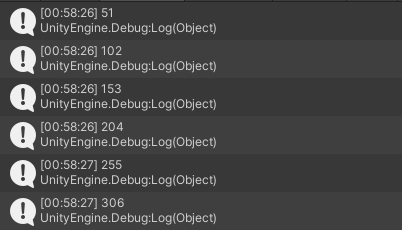
// 内部の実装
while(await e.MoveNextAsync()){
await action(e.Current);
}渡したデリゲートは await されます。
返り値は UniTask です。
UniTaskAsyncEnumerable.EveryUpdate()
.Subscribe(async _ => {
await UniTask.DelayFrame(50);
Debug.Log(Time.frameCount);
});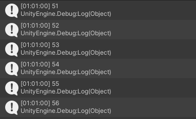
// 内部の実装(わかりやすいようにちょっと改変してます)
while(await e.MoveNextAsync()){
onNext(e.Current).Forget();
}渡したデリゲートは await されず Forget されます。
返り値は IDisposable か void です。
// 内部の実装(わかりやすいようにちょっと改変してます)
while(await e.MoveNextAsync()){
await onNext(e.Current);
}挙動は ForEachAwaitAsync と同じですが、返り値や引数のオーバーロードなどが違います。
返り値は IDisposable か void です。
引数で渡す
await UniTaskAsyncEnumerable.EveryUpdate()
.ForEachAsync(_ => {
Debug.Log(Time.frameCount);
},this.GetCancellationTokenOnDestroy());UniTask.WithCancellation を使う
await UniTaskAsyncEnumerable.EveryUpdate()
.ForEachAsync(_ => {
Debug.Log(Time.frameCount);
}).WithCancellation(this.GetCancellationTokenOnDestroy());ForEachAwaitWithCancellationAsync を使う
await UniTaskAsyncEnumerable.EveryUpdate()
.ForEachAwaitWithCancellationAsync(async (_,__,ct) => {
await UniTask.DelayFrame(60,cancellationToken: ct);
Debug.Log(Time.frameCount);
});引数で渡す
UniTaskAsyncEnumerable.EveryUpdate()
.SubscribeAwait(async _ => {
await UniTask.DelayFrame(50);
Debug.Log(Time.frameCount);
}, this.GetCancellationTokenOnDestroy());IDisposable.AddTo を使う
UniTaskAsyncEnumerable.EveryUpdate()
.SubscribeAwait(async _ => {
await UniTask.DelayFrame(50);
Debug.Log(Time.frameCount);
}).AddTo(this.GetCancellationTokenOnDestroy());| デリゲートを async に | デリゲートの実行方法 | 返り値 | |
|---|---|---|---|
| ForEachAsync | できない | 同期 | UniTask |
| ForEachAwaitAsync | できる | await | UniTask |
| Subscribe | できる | Forget | IDisposable/void |
| SubscribeAwait | できる | await | IDisposable/void |
デリゲートがどのような挙動をするのか把握して使い分ける必要があります。
返り値が IDisposable か void の Subscribe と SubscribeAwait は await できないので、await foreach 的な使い方ができません。SubScribe系は UniRx に似せていますね。
特殊な IUniTaskAsyncEnumerable を生成するファクトリメソッドを紹介します。
UniTaskAsyncEnumerable は UniRx の Observable と似ていて、ファクトリメソッドも同じようなものが多いです。なのであまり紹介はしません。
毎フレーム次のUpdateのタイミングまでawaitする UniTaskAsyncEnumerable を生成します。
引数には PlayerLoopTiming を設定できます。Update以外にも様々な 毎フレーム訪れる Unityイベントを 待機できます。
PlayerLoopTiming の一覧です。
// EveryUpdateの書き方
await UniTaskAsyncEnumerable.EveryUpdate(PlayerLoopTiming.FixedUpdate)
.ForEachAsync(_ => {
rigidbody.velocity += Vector3.forward;
});
// whileで書くとこんな感じ
while(true){
await UniTask.Yield(PlayerLoopTiming.FixedUpdate);
rigidbody.velocity += Vector3.forward;
}FixedUpdate のタイミングで待てば Rigidbody を操作しても安心安全。
時間やフレーム毎に経過するまで await する IUniTaskAsyncEnumerable を生成します。
UniRx の Observable.Interval と Observable.IntervalFrame と同じです。
UniTaskAsyncEnumerable.Interval(TimeSpan.FromSeconds(1))
.ForEachAsync(_ => {
Debug.Log("hoge");
});UniTaskAsyncEnumerable.IntervalFrame(100,PlayerLoopTiming.FixedUpdate)
.ForEachAsync(_ => {
Debug.Log("hoge");
});IntervalFrame は PlayerLoopTiming を指定できます。
一生終わらない IUniTaskAsyncEnumerable を生成してしまうので注意が必要です。必ず CancellationToken を指定しましょう。
uGUI からの変換も UniRx と似ています。
uGUIの様々なイベントを ~~AsAsyncEnumerable のメソッドで IUniTaskAsyncEnumerable に変換して使うことができます。
// OnClickAsAsyncEnumerable で IUniTaskAsyncEnumerableに変換
button.OnClickAsAsyncEnumerable()
.ForEachAsync(_ => {
Debug.Log("Button Click!!");
});
// オペレータも使える
await button.OnClickAsAsyncEnumerable().Take(3).LastAsync();
Debug.Log("3回クリックされた");UniTask.Linq にはみんな大好きオペレータも用意されています。IEnumerable を加工する System.Linq と同じように IUniTaskAsyncEnumerable を加工することができます。
使い方は普通の Linq と同じなのでかなり省きます。
メソッドは Select と SelectAwait のように ~~,~~Await のようなセットになっています。
// 同期デリゲート版
UniTaskAsyncEnumerable.EveryValueChanged(this.transform, t => t.position.y)
.Where(y => y > 0)
.ForEachAsync(_ => {
Debug.Log("Yが0以上だよ～～");
});
// 非同期デリゲート版
UniTaskAsyncEnumerable.EveryValueChanged(this.transform, t => t.position.y)
.WhereAwait(async y => y > 0) // asyncが使える
.ForEachAsync(_ => {
Debug.Log("Yが0以上だよ～～");
});次は返り値が UniTask<T> になるような(メソッドチェーンの末端にくる)メソッドたちです。
SumAsync
// SumAsyncでIUniTaskAsyncEnumerable<int>の合計を出す
var sum = await UniTaskAsyncEnumerable.Range(1, 10)
.SumAsync();
Debug.Log(sum); // 55デリゲートを async にすることができます。
SumAsyncAwait
// SumAsyncAwaitでIUniTaskAsyncEnumerable<int>の合計を出す
// デリゲートを async にできる
var sum = await UniTaskAsyncEnumerable.Range(1, 10)
.SumAwaitAsync(async n => await ValueAsync(n));
Debug.Log(sum); // 55
// 値をそのまま返すというだけの非同期メソッド(実際はAPI叩いたり)
async UniTask<int> ValueAsync(int n){
return await UniTask.Run(() => n);
}ラムダ式の引数に CancellationToken を渡すことができるメソッド群です。
UniTaskAsyncEnumerable.EveryUpdate()
.SelectAwaitWithCancellation(async (n,ct) => await ValueAsync(Time.frameCount,ct))
.ForEachAsync(n => {
Debug.Log(n);
});普段の Linq のオペレータと同じように使うことができますが、 ~~Await などと ForEach~~,Subscribe~~ などの組み合わせをしっかり考えないと取りこぼしが発生したり予期しない挙動をするので注意が必要です。
UniTaskAsyncEnumerable は非同期シーケンスを扱うという特性上、メッセージの取りこぼしには注意しないといけません。
例えば ForEachAwaitAsync を使ったときは以下のような挙動をします。
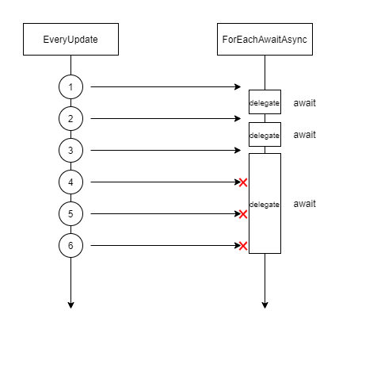
もし EveryUpdate を ForEachAwaitAsync で受け取った場合、非同期なデリゲートを await している途中はメッセージを受け取ることができません。
図の × が メッセージの取りこぼしです。
毎フレーム必ず受け取りたい かつ 非同期なデリゲートを使いたい場合は Subscribe を使いましょう。
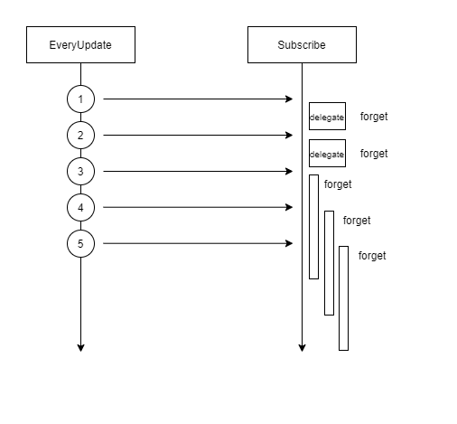
逆に ForEachAwaitAsync のような、取りこぼしを想定しているときに SubScribe や ForEachAsync を使ってしまう、などにも注意が必要です。
IUniTaskAsyncEnumerable.Queue() は、 デリゲートが await 中のメッセージをバッファリングしてくれます。 Queue() は先入れ先出しのデータ構造にデリゲートをバッファリングするので、 前のデリゲートのawait が終わったらキューから一番古い デリゲートが呼び出されます。
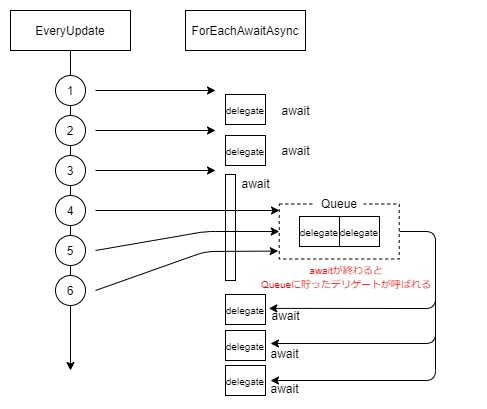
Queue() ありとなしの違いを見てみましょう
UniTaskAsyncEnumerable.EveryUpdate()
.Select(_ => Time.frameCount)
.ForEachAwaitAsync(async frameCount => {
Debug.Log(frameCount);
await UniTask.DelayFrame(10);
});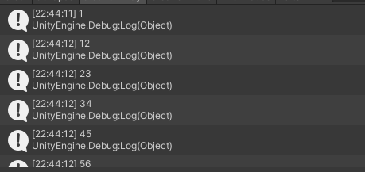
UniTaskAsyncEnumerable.EveryUpdate()
.Select(_ => Time.frameCount)
.Queue()
.ForEachAwaitAsync(async frameCount => {
Debug.Log(frameCount);
await UniTask.DelayFrame(10);
});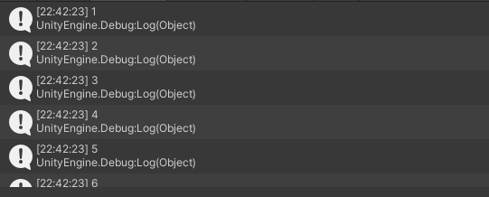
await されているときのフレーム数が表示されているのでバッファリングされているのがわかります。
取りこぼしは絶対悪ではありません。
逆に利用して完結に機能を実装することもできます。
// 押したら0.5秒間 押しても何もしないボタン(連打防止)
button.OnClickAsAsyncEnumerable()
.ForEachAwaitAsync(async _ => {
Debug.Log("Button Click!");
await UniTask.Delay(500);
}); このように、取りこぼしを利用して連打防止の機能を作ることができました。
Channel は System.Threading.Channels をUniTask向けにアレンジしたものです。
UniRx の Subject のようにメッセージの送受信ができる機構です。
Subject を知っていると理解が早いと思います。
非同期キューイングな処理ができるので取りこぼしがありません。
Channel は メッセージを送る ChannelWriter<T>(IObserver<T>に相当) と メッセージを受け取る ChannelReader<T>(IObservable<T>に相当) に分けられます。
// channel生成
var channel = Channel.CreateSingleConsumerUnbounded<int>();
// IObserver<T> 相当のオブジェクト
var writer = channel.Writer;
// OnNext() に相当
writer.TryWrite(1);
writer.TryWrite(2);
writer.TryWrite(3);
// OnCompleted() に相当
writer.Complete();
writer.TryComplete();
// OnError() に相当
writer.TryComplete(new Exception());// IObservable<T> 相当のオブジェクト
var reader = channel.Reader;
// 最初のwriter.TryWrite()を待つ
var result = await reader.ReadAsync();
// 全てのwriter.TryWrite()を受け取る
// IObservable<T>.Subscribe() に相当
reader.ReadAllAsync() // IUniTaskAsyncEnumerable<T>
.ForEachAsync(n => {
Debug.Log(n);
});
// 最初のwriter.TryWrite()まで待機
await reader.WaitToReadAsync();
// writer.Complete(), writer.TryComplete()まで待機
await reader.Completion;Channel.CreateSingleConsumerUnbounded<int>(); は名前の通り単一消費者を想定されています。
UniRx のように 複数個所で メッセージを待ち受けるような処理はブロードキャスト機能がないので正しく機能しません。
複数個所で待ち受けしたい場合は IUniTaskAsyncEnumerable<T>.Publish() を使います。
// channel生成
var channel = Channel.CreateSingleConsumerUnbounded<int>();
// Reader.ReadAllAsync().Publish() で安全に複数待機できる
var connectable = channel.Reader.ReadAllAsync().Publish();
// ForEachAsync等で待ち受ける
connectable.ForEachAsync(n => {
// writer.TryWrite() のタイミングで実行される
Debug.Log(n);
});AsyncReactiveProperty は UniRx.ReactiveProperty と同じような使い方ができます。
Queueの機能はないので必要な時に .Queue() を挟みましょう。
ReactiveProperty とは 値を Rx化 したいときに使います。
値が変わるとメッセージが発行される機能があります。
Rx を知らない人でも使いやすい機能だと思うので是非活用してください。
// 宣言
var asyncReactiveProperty = new AsyncReactiveProperty<int>(0);
asyncReactiveProperty.Value += 1; // 購読者に通知
// 最初に値が変わるまで待つ(購読)
var result = await asyncReactiveProperty.WaitAsync();
// 非同期Linqも使える
var result = await asyncReactiveProperty.SumAsync();
// asyncReactiveProperty.Dispose() が呼ばれるまで await
await asyncReactiveProperty.WithoutCurrent()
.ForEachAsync(n => {
// 値が変わる度に呼ばれる
Debug.Log(n);
});
// 値が変わるたびに内部で.ToString()処理が走りテキストに代入される
asyncReactiveProperty.WithoutCurrent().BindTo(GetComponent<Text>());
// TextMeshProにも対応してる
asyncReactiveProperty.WithoutCurrent().BindTo(GetComponent<TMP_Text>());
// CombineLatestで結合することもできる
AsyncReactiveProperty<int> arp2 = new AsyncReactiveProperty<int>(5);
var asp3 = asyncReactiveProperty.CombineLatest(arp2,(x,y)=>(x,y));
asp3.ForEachAsync(n => {
Debug.Log($"x:{n.x} y:{n.y}");
});
AsyncReactiveProperty
ReactiveProperty
基本的には、イベント駆動の設計をするとき以外は全部 UniTask で良いと思います。
UniRx に比べて学習コストも低く取っ付きやすいと思います。
最初はコルーチンのような使い方だけしてみるとか、便利な機能をちょこちょことつまみ食いするだけとか、それだけでも相当便利です。
UniTaskAsyncEnumerable は割と学習コストあると思いますが、最初はEveryUpdate が便利なのでそれだけ使ってればいいと思いますし、 C# で Linq を使っていればオペレータの使い方は慣れます。もっと慣れてきたら
今後はもっと UniTask が活躍すると思うのでどんどん使っていきましょう！(UniRxもまだまだ需要はあるし使えます)
UniTask は Unity 用のゼロアロケーションで async/await つよつよライブラリ！破壊的変更に注意！UniTask.Linq は IAsyncEnumerable\<T> と await foreach(っぽいもの) を使える！Channel や AsyncReactiveProperty など新機能盛りだくさん！デモのコードは簡潔にしたかったのでキャンセル対応をしませんでしたが、
ぜったいぜッッッッッッッッッッッッたいにキャンセル対応してください！！
絶対です。めんどくさい とか コードが増えるのが嫌 とかそういうの関係なく絶対に。 CancellationToken を メソッドに渡すこと。メソッド側でも対応すること。UniTaskがキャンセル対応しやすい設計になってるのでそれに興じてください。約束です。
記事を読んでくださりありがとうございました。
今回も自己満足な記事を書いてしまいました、4回生のすいまです。
最初にも書きましたが、去年の記事と被ることはなるべく書かないようにしました。 なので、去年の記事と合わせて読むともっと理解が深まると思います。(変更点には注意しましょう)
UniTask は Unity には必須と言っても過言ではないくらいとっても便利なライブラリです。
この記事を何度も何度も読んでじわじわと理解してくれたら幸いです。
まだ紹介しきれていない変更点や機能もあるので良ければ自分でも調べてみてください。
Twitter等での質問も遠慮なくお願いします。 間違っていることがあれば優しく教えてくれるとありがたいです。
この記事を作成するにあたり、今回もさまざまな記事を参考にさせていただきました。感謝します。
参考って言うかパクｒ
UniTask v2 – Unityのためのゼロアロケーションasync/awaitと非同期LINQ(https://tech.cygames.co.jp/archives/3417/)
UniTaskの使い方2020 / UniTask2020(https://speakerdeck.com/torisoup/unitask2020)
UniTask Ver2 、UniTaskAsyncEnumerableまとめ(https://qiita.com/toRisouP/items/8f66fd952eaffeaf3107)
非同期ストリーム - C# によるプログラミング入門 | ++C++; // 未確認飛行 C(https://ufcpp.net/study/csharp/async/asyncstream/#iasyncenumerable)
C#8.0までに非同期ストリームのことを知っておく(https://qiita.com/muniel/items/d91cd61b912e4c2938a9)
UniTaskでレッツ非同期！(http://softmedia.sakura.ne.jp/advent-calendar/2019/12-1.html)